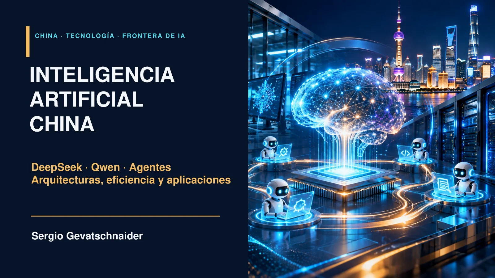

Presentación con notas
44 láminas, búsqueda, fuentes, notas y videos asociados.
Abrir recurso ↗Arquitecturas, razonamiento, aplicaciones y sistemas multiagente. De los modelos a las decisiones de despliegue.
44 diapositivas · ES / EN · 8 recursos audiovisuales

44 láminas, búsqueda, fuentes, notas y videos asociados.
Abrir recurso ↗Cinco escenarios, siete parámetros, enrutamiento top-k y exportaciones replicables.
Abrir recurso ↗Ocho recursos con objetivos, preguntas y enlaces a las diapositivas.
Abrir recurso ↗PowerPoint editable. PDF para lectura y proyección. Los videos conservan su audio original y se enlazan desde la guía.
Recorrido docente y actividadesEl simulador utiliza índices sintéticos y ecuaciones didácticas. Sus trazas ilustran supuestos y no son benchmarks de DeepSeek o Qwen. Las portadas son ilustraciones conceptuales generadas por IA.